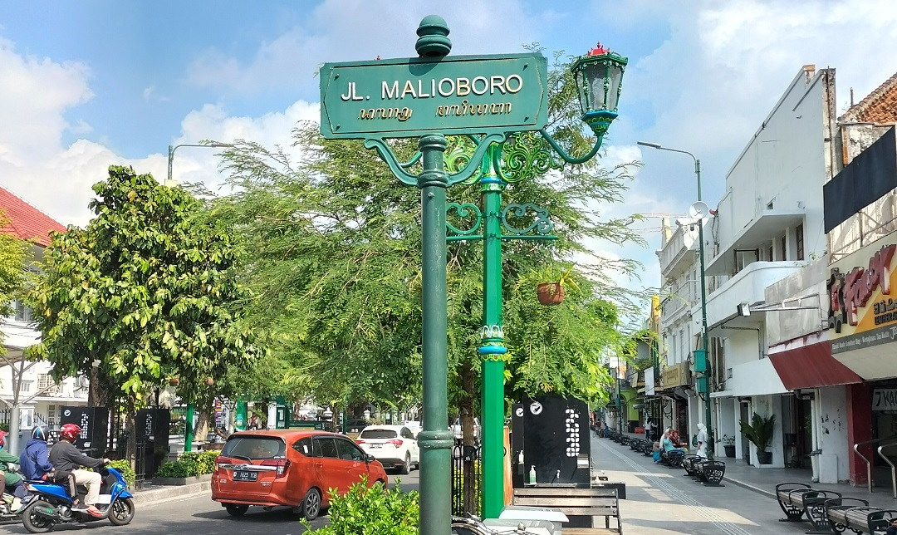
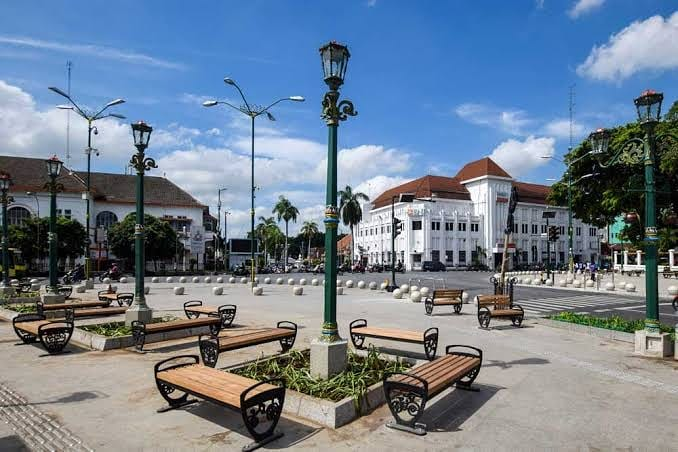
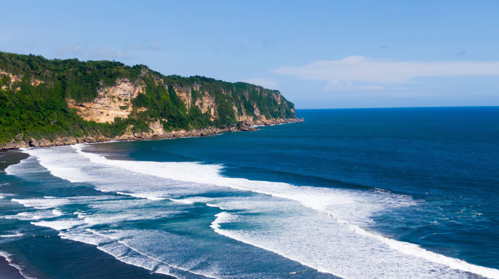
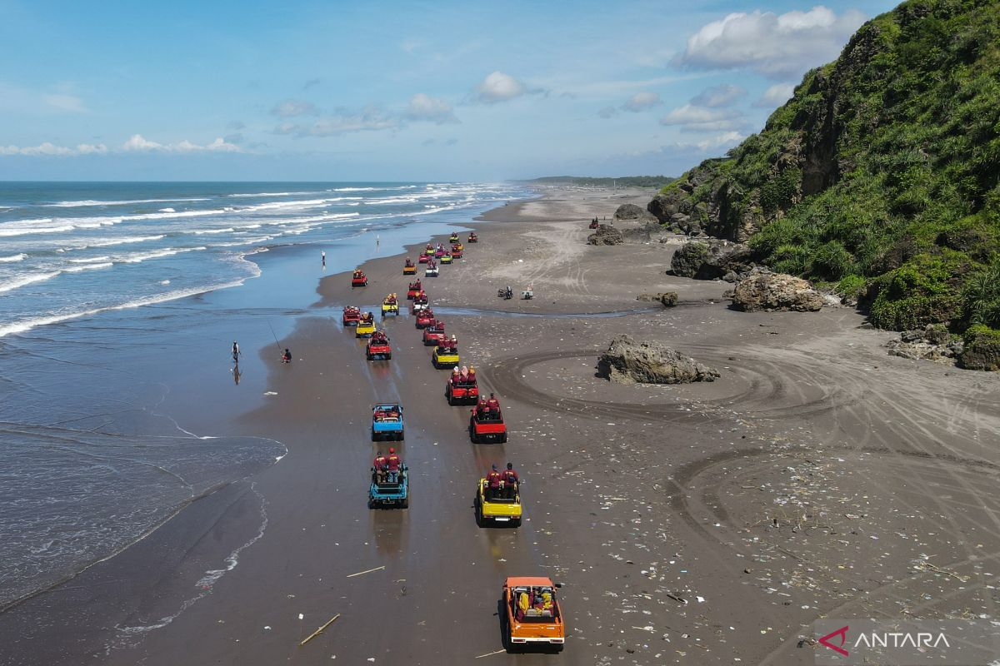
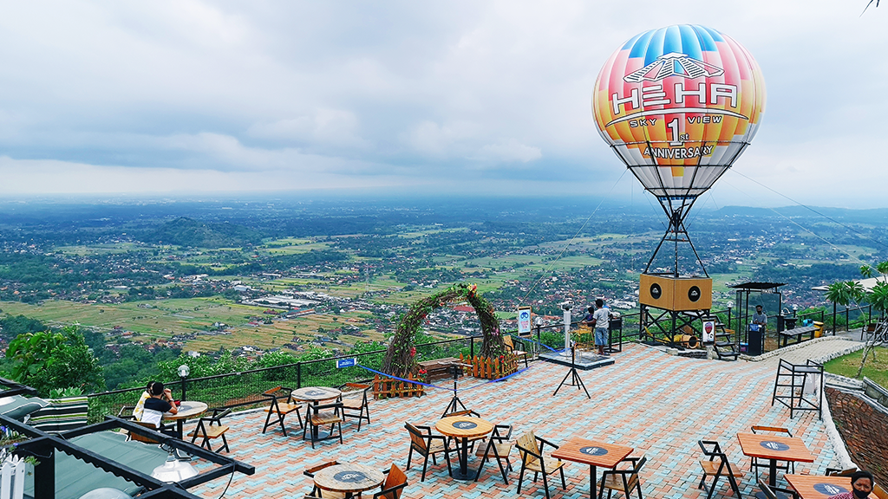
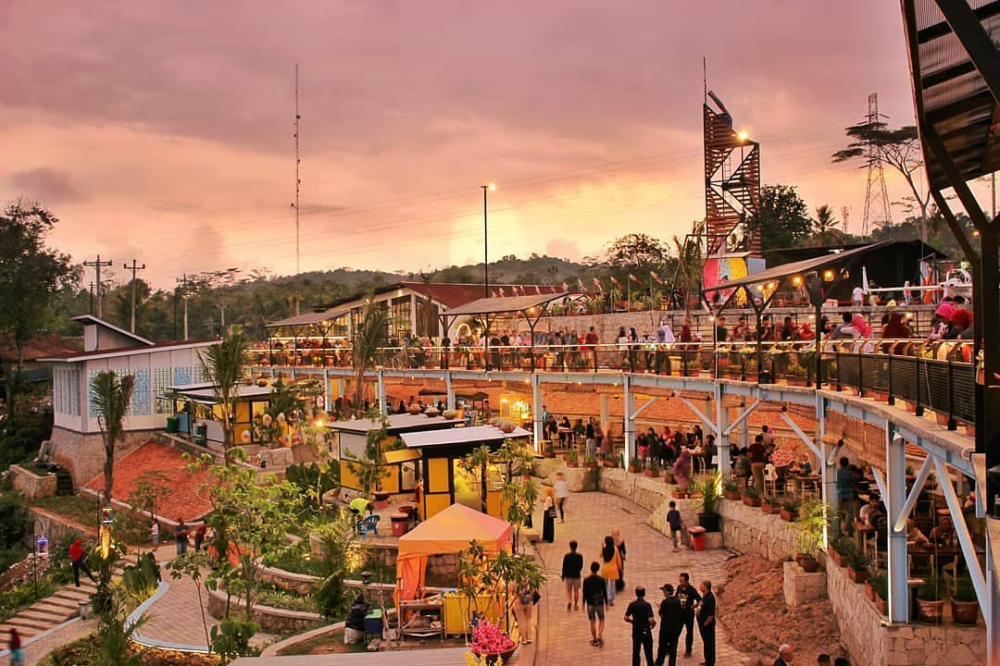

Malioboro
Ikon wisata Yogyakarta yang terkenal dengan pusat belanja dan budaya.
Malioboro merupakan kawasan wisata paling populer di Yogyakarta. Jalan ini selalu ramai oleh wisatawan lokal maupun mancanegara.
Pengunjung dapat menikmati wisata belanja, kuliner khas, pertunjukan seni jalanan, serta suasana budaya Jawa yang kental.



Pantai Parangtritis
Nikmati panorama pantai selatan dengan ombak dan sunset yang memukau.
Pantai Parangtritis terkenal dengan ombak besar dan pemandangan sunset yang indah.
Tersedia berbagai aktivitas wisata seperti ATV, berkuda, dan menikmati kuliner pesisir.
Tebing Breksi
Destinasi unik dengan ukiran batu dan pemandangan kota dari ketinggian.
Tebing Breksi merupakan bekas area pertambangan yang kini menjadi tempat wisata favorit.
Dari puncaknya pengunjung dapat menikmati panorama kota Yogyakarta.
Candi Prambanan
Candi Hindu terbesar di Indonesia yang kaya akan sejarah dan budaya.
Prambanan merupakan situs warisan dunia UNESCO yang dibangun pada abad ke-9.
Keindahan arsitektur dan legenda Roro Jonggrang menjadi daya tarik utamanya.


HeHa Sky View
Tempat terbaik menikmati pemandangan kota Yogyakarta dari ketinggian.
HeHa Sky View menawarkan spot foto menarik dan area kuliner modern.
Pada malam hari pengunjung dapat menikmati gemerlap lampu kota Yogyakarta.